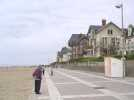
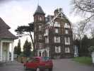
On est bien accueilli, au Creps qui nous nourrit matin et soir et nous couche ! L'ensemble est supérieurement équipé dans un grand domaine avec maison de maître, 3 ou 4 gymnases, plein d'installations annexes et encore, hors de l'enceinte, des tennis couverts...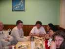
Le soir donc, repas au Creps. Chacun apporte sa plus ou moins modeste contribution pour améliorer l'ordinaire, l'équipe canadienne en particulier. J'ai fourni un peu de Bordeaux (Côtes de Blaye) pour qu'ils sachent ce qui est bon !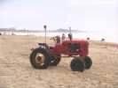
Au matin, le tracteur est en place pour transporter les équipements. Il intéresse beaucoup les enfants : quand on a eu monté de merveilleux CVs, on les a entendu crier : "oh, viens voir... un tracteur"...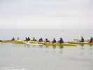
Sur la mer, nautisme : le club de kayak a un kayak à... SIX places ! Ca doit avancer, mais pour les virages...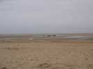
A marée basse, la plage est quasiment horizontale, très vaste et dure, on peut y marcher ou rouler sans problèmes... à condition de remonter à temps !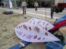
Le Holland Kite Team est là, constitué de John et Hermann. Ils déballent de beaux CVs dont ces Sentinelles décorées avec délicatesse...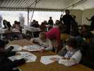
Dans le barnum, un atelier de construction où se succéderont les classes des écoles pour construire des Eddies qui marchent bien une fois réglés, ou des sleds... qu'on ne peut pas régler.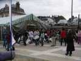
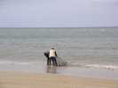
Pas beaucoup de vent cette semaine, même les flows-forms se laissent aller, et à marée haute, bien sûr...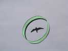
John a mis en l'air son composite de circoflex et d'oiseau...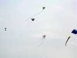
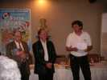
Petite réception à la Mairie pour remercier tout le monde. En particulier il y a un jumelage cervolistique avec Saint-Placide (Canada) dont le maire Denis (au centre) s'est déplacé à Houlgate. Eux font leur festival sur le lac gelé !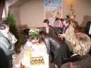
Les dirigeants des 2 associations sont... des dirigeantes. Elles signent toutes deux la "chartre" rédigée par un canadien, ça se sent...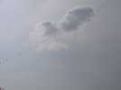
Les hollandais sortent un de leurs trains, ils en ont plusieurs autres, avec des oiseaux, un dragon-lion, etc... Leur monospace est bourré à craquer !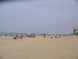
En semaine, pas de zone réservée, on s'installe où on veut sur la plage au milieu des baigneurs... Ca se passe assez bien, c'est vrai que la plage est grande et les "baigneurs" pas trop nombreux. Mais le week-end, la zone sera clôturée.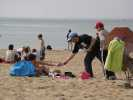
Il y a même des baigneuses en bikini qui se font bronzer courageusement. Il y en a une qui se baignera tranquillement pendant 10 mn !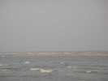
Cette île est ce qui reste de la plage basse quand la marée monte. Il faut penser à remonter avant car la mer fait vite, sur le plat. A marée haute, tout est complètement recouvert.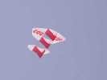
Une copie de Coucou, cerf-volant d'époque, de Pantenier.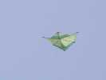
Et un Jessica 12 ! Le créateur, Sylvien est venu le dimanche, mais celui-là est celui de François, ou plutôt celui de Sylvien qu'il a donné à François. Vous suivez toujours ? C'était le premier, ce pourquoi il a plein de coutures maintenant inutiles permettant les essais de positionnements des parties.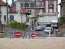
Le soir, pour partir de la plage, je crois bien que cette rue est interdite, mais c'est juste une impression...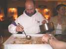
Le soir au bistrot Le Globe, Yves nous initie à la "tire" canadienne : sirop d'érable chaud versé sur lit de neige. Malheureusement, pas de neige à Houlgate en avril, on la remplace par de la glace pilée...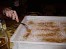
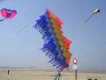
Les italiens ont créé ce très joli cerf-volant à étagères, très stable, mais nécessitant pas mal de vent...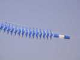
Il y a aussi une queue qui me plait bien, elle se contracte ou se dilate comme un accordéon en fonction des remous, et le résultat n'est pas vilain...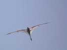
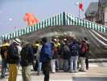
Au déjeuner, plateaux-repas froids sous la tente, à la bonne franquette, parfait, mais au top-départ il y a la queue !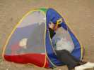
L'après-midi, faut s'abriter du soleil. Voilà une solution simple et peu encombrante, mais faut être souple...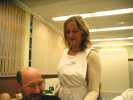
Le soir, repas au Creps de nouveau. La sirène du Creps nous accueille avec le sourire, surtout Yves qui lutine toutes les dames...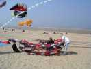
Au matin, Claude commence à monter sa roue, pour ces CVs, on trouve toujours un couillon pour aider (comme moi)...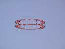
Ben ça y est, elle vole. Ca, c'est un bon cerf-volant, même par petit temps...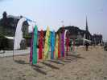
Michel a monté son champ de grandes bannières. Il en a aussi des plus petites, plus faciles à transporter, surtout que les grandes, il y en a la moitié dont on ne peut plus replier les cannes !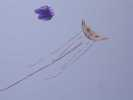
Emmanuel se déplace beaucoup, cette année, on voit (avec plaisir) ses chats partout...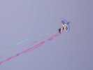
Un cerf-volant indonésien, tenu par une indonésienne, mais en bambou, spi et carbone, c'est quand même pratique le progrès...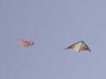
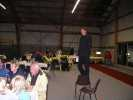
Le samedi soir, fête dans les tennis (couverts mais pas chauffés, faut manger en anorak) du Creps. Pouillaude essaie encore de faire un discours, mais il a plus de mal qu'à la mairie à se faire entendre...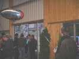
Maxime (Fellion, vous savez, qui a créé la revue Planète Cerf-volant) fait maintenant dans le dirigeable. Il en a amené un, jouet, mais il travaille dans plus sérieux comme ceux d'Ushuaïa...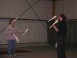
Un couple de jeunes jongleurs sympathiques anime la soirée en s'amusant aussi !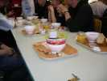
Le lendemain matin, petit-déj au Creps, tout ce qu'on veut, café, lait, céréales, jus de fruit, etc... Les chinoises préfèrent... des nouilles en conserve... beurk !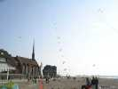
Christian a monté son ensemble de carpes. Il en avait plus mais on lui a coupé sa ligne pour lui en voler ! On aura tout vu ! Remarquez, à l'Antenne de Beauce, on nous a coupé une arche de 240 pour en voler 5... Deux heures pour démêler après !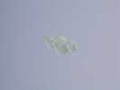
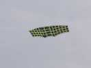
Vent ultra-léger, temps pour le Faga, celui-ci imite un lattis de bois (cloison chinoise ?), beau boulot de couture...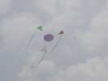
Emmanuel a sorti son léger aussi, pas beaucoup de surface, mais armature light...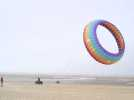
Pour les gros, il faut tricher, avec le Quad. Après un essai avec le bol, la grande pieuvre de Yves volera un peu, mais le 1/2 tour sera fatal au vol !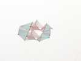
Christian a sorti son porteur le plus léger, un Pellibox avec des ailes supplémentaires...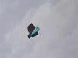
Déjà vu à Berck, ce gentil petit hibou, dans d'autres couleurs...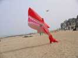
Ces requins-sacs ne décollent même pas, avec leur affreux bide ! Réflexion d'enfants entendue : il a dû manger au MacDo ! Les pubs contre l'obésité finissent par porter...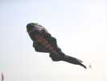
Encore les poissons volant tout seul, avec des nageoires, des écailles, etc. dans le vent qui monte un peu et devient parallèle à la plage, ce qui est meilleur...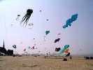
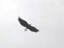
Les hollandais ont ramené l'oiseau aperçu de loin à Berck. Vu de face, il est impressionnant, en noir, avec toutes ces plumes...